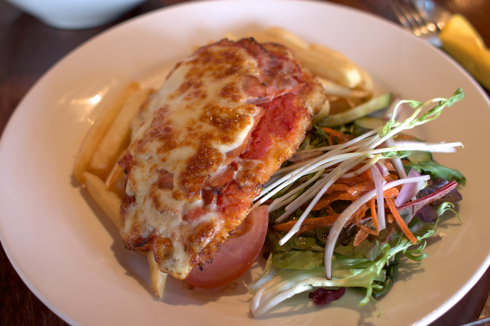

Chicken Parmigiana
Origin: Northeast United States
The dish, also known as "Chicken Parm", originated in the northeast United States from Italian immigrants, and became a popular staple in restaurants serving Italian-American cuisine by the 1950s. In the United States and Canada, chicken parmigiana is often served as a main course, and sometimes with a side of, or on top of pasta. Many restaurants also offer chicken parm sandwiches. Upon arriving in America, Italian immigrants began to take advantage of America's affordable meat market, incorporating chicken into parmigiana.
Ingredients
- 4 skinless, boneless chicken breast halves
- Salt and freshly ground black pepper to taste
- 2 eggs
- 1 cup panko bread crumbs, or more as needed
- ½ cup grated Parmesan cheese
- 2 tablespoons all-purpose flour, or more if needed
- 1 cup olive oil for frying
- ½ cup prepared tomato sauce
- ¼ cup fresh mozzarella, cut into small cubes
- ¼ cup chopped fresh basil
- ½ cup grated provolone cheese
- ¼ cup grated Parmesan cheese
- 1 tablespoon olive oil
Instructions
- Step 1
Preheat an oven to 450 degrees F (230 degrees C).
- Step 2
Place chicken breasts between two sheets of heavy plastic (resealable freezer bags work well) on a solid, level surface. Firmly pound chicken with the smooth side of a meat mallet to a thickness of 1/2-inch. Season chicken thoroughly with salt and pepper.
- Step 3
Beat eggs in a shallow bowl and set aside.
- Step 4
Mix bread crumbs and 1/2 cup Parmesan cheese in a separate bowl, set aside.
- Step 5
Place flour in a sifter or strainer; sprinkle over chicken breasts, evenly coating both sides.
- Step 6
Dip flour coated chicken breast in beaten eggs. Transfer breast to breadcrumb mixture, pressing the crumbs into both sides. Repeat for each breast. Set aside breaded chicken breasts for about 15 minutes.
- Step 7
Heat 1 cup olive oil in a large skillet on medium-high heat until it begins to shimmer. Cook chicken until golden, about 2 minutes on each side. The chicken will finish cooking in the oven.
- Step 8
Place chicken in a baking dish and top each breast with about 1/3 cup of tomato sauce. Layer each chicken breast with equal amounts of mozzarella cheese, fresh basil, and provolone cheese. Sprinkle 1 to 2 tablespoons of Parmesan cheese on top and drizzle with 1 tablespoon olive oil.
- Step 9
Bake in the preheated oven until cheese is browned and bubbly, and chicken breasts are no longer pink in the center, 15 to 20 minutes. An instant-read thermometer inserted into the center should read at least 165 degrees F (74 degrees C).